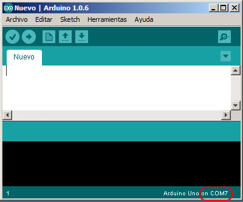

Troubleshooting with Arduino¶
Is the Arduino board connected?¶
The USB cable must be connected to the computer and the Arduino board. The computer must be on.
If everything went well, the Arduino board shows a lit led called the Power ON led:

Is the Arduino environment installed?¶
The Arduino IDE environment can be downloaded from the official project page in the 'software' tab, clicking on the appropriate operating system in the 'Download the Arduino IDE' section:
Once the program is downloaded, it must be installed on the computer. It is also necessary to install the drivers so that the computer recognizes the Arduino board when it is connected to a USB port.
Is the correct board configured?¶
In the menu Tools... Board: or in the old versions Tools... Board... you have to configure the same Arduino board that is connected to the computer. The most common model is Arduino Uno, but it depends on the board that is connected.
Both the selected board and port can be seen in the lower right corner of the Arduino environment:

Is the correct port configured?¶
There are several serial ports on the computer. Only one of those serial ports belongs to the Arduino board and that is the one we need to configure.
The selected communication port can be seen in the lower right corner of the Arduino environment:
To change it you have to press the appropriate port in the menu Tools... Port...
To check that the port is configured correctly, the serial monitor can be opened, and the communication leds of the Arduino board should blink. Another test is to try to send a program. While loading the program, the communication LEDs should flash.
Are the correct drivers installed?¶
If the Arduino environment is already installed and the computer does not recognize the Arduino board when it is connected, the problem can be solved by installing the drivers that come with the Arduino environment software.
Below are several versions of the drivers for Arduino. After downloading the file, you must unzip and run the installation software.
If an Arduino compatible board with a CH340 communications chip is used, it is necessary to install another driver other than the standard one:
Is there a short circuit?¶
If the Arduino board seems to be correctly connected and despite this the power LED remains off, it is possible that the cables connected to the Arduino are connected incorrectly and cause a short circuit. To check this error you must disconnect the cable connected to the '5v' terminal and the cable connected to the 'Vin' terminal.
Does the USB cable communications work?¶
Another problem that can arise with the USB cable is that the communication wires are cut while the power wires are working correctly. In this case, the led of the Arduino board will light up, but the computer will not recognize the board and the communications will not work.
The easiest way to check that there are no problems with the USB cable is to connect this cable to another working device or change the cable to another one and check that everything works fine.
Check if the Arduino board is well installed¶
To ensure that the Arduino board is correctly installed and everything works correctly, the following steps will be followed:
Open the Arduino IDE environment by clicking on its icon:

Open an example program by clicking the
File... Examples... 01.Basics... Blinkmenu.You can also copy and paste the following program into the Arduino environment.
1 2 3 4 5 6 7 8 9
// Blink Program void setup() { pinMode(LED_BUILTIN, OUTPUT); } void loop() { digitalWrite(LED_BUILTIN, HIGH); // turn the LED On delay(1000); // wait for a second digitalWrite(LED_BUILTIN, LOW); // turn the LED Off delay(1000); // wait for a second }
Finally, click on the
Program... Upload (CTRL+U)menu to transfer the program to the Arduino board.
If everything has worked correctly, the led of the Arduino board will begin to blink with a time on of one second and an off time of another second.